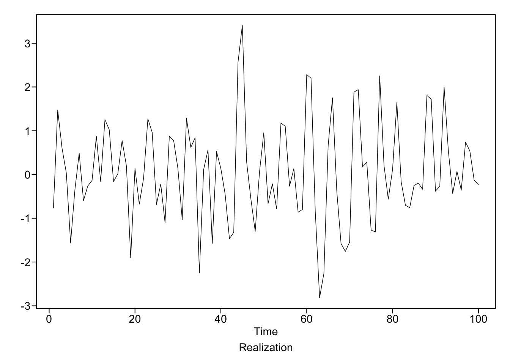
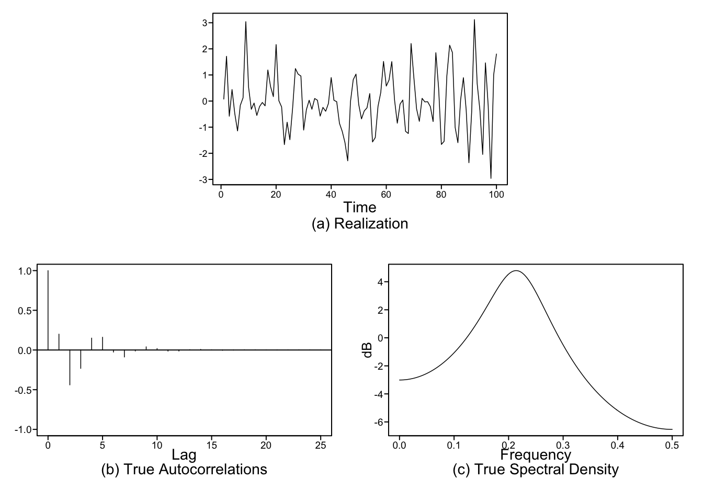
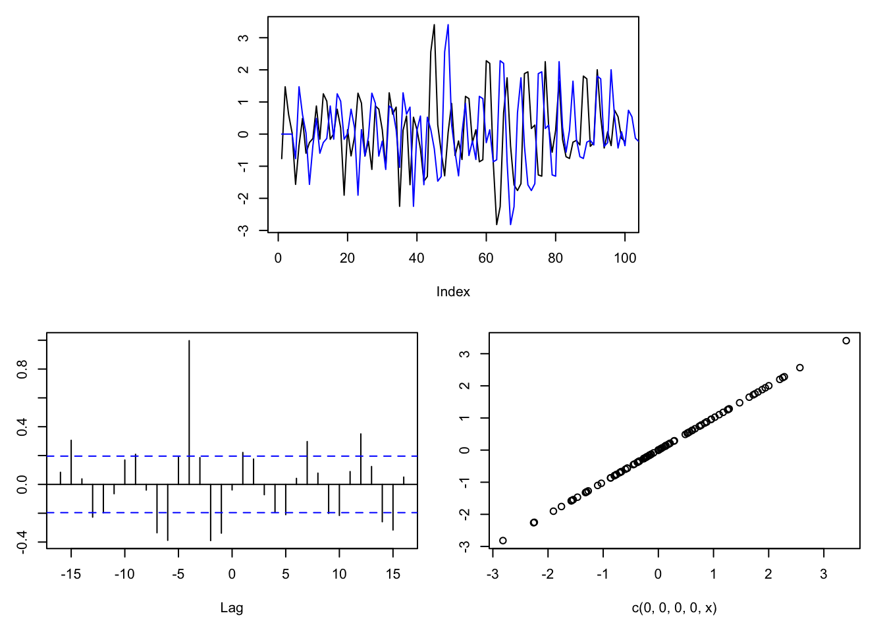
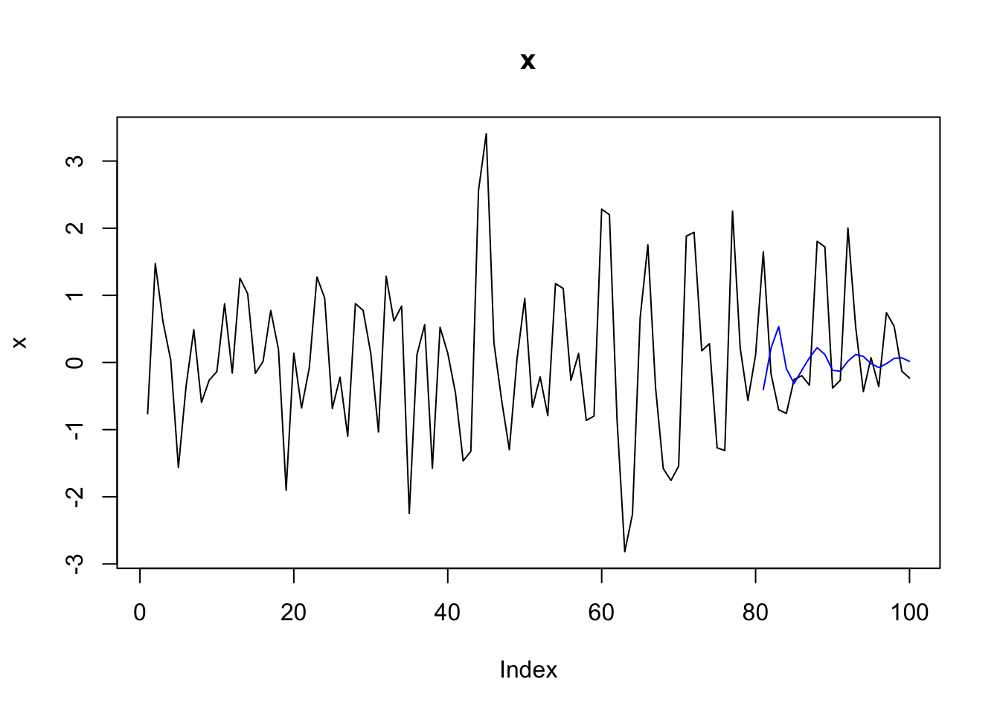
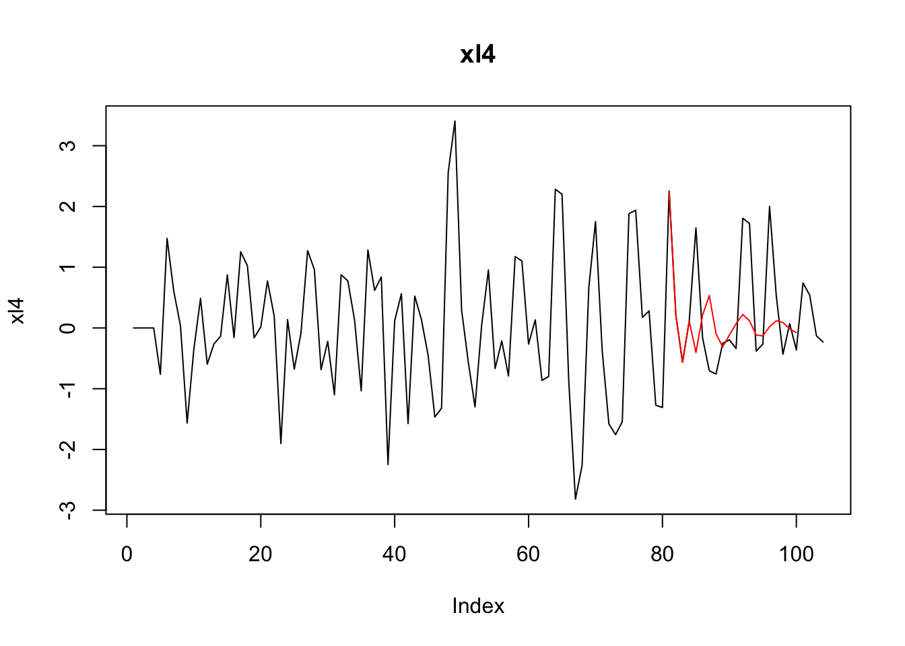
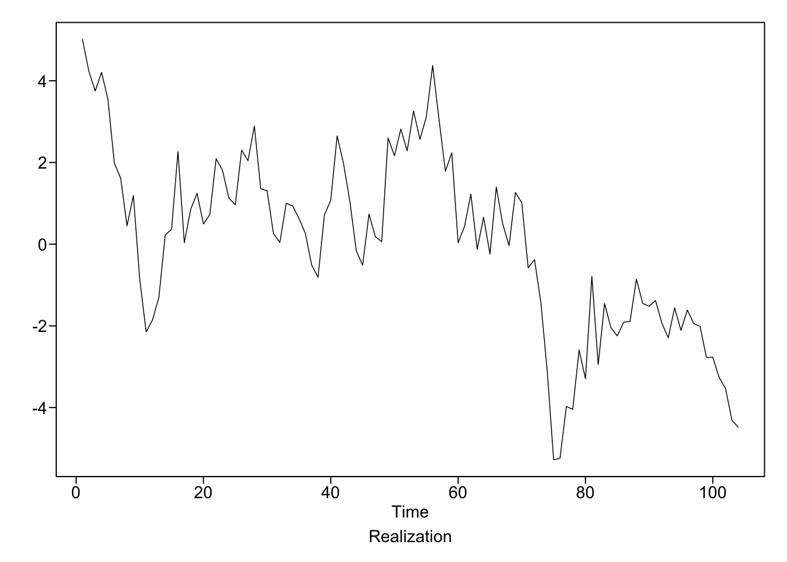
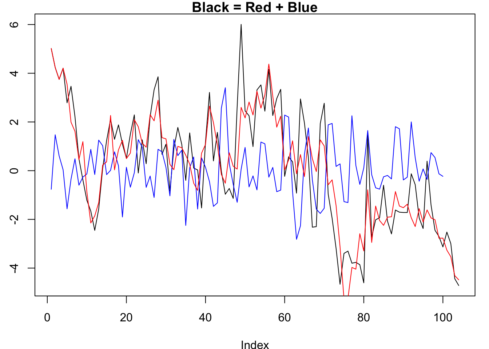
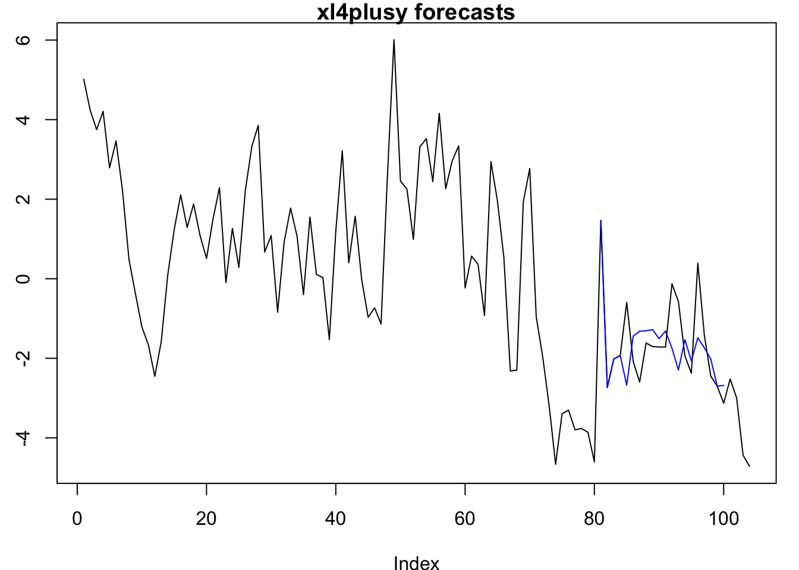
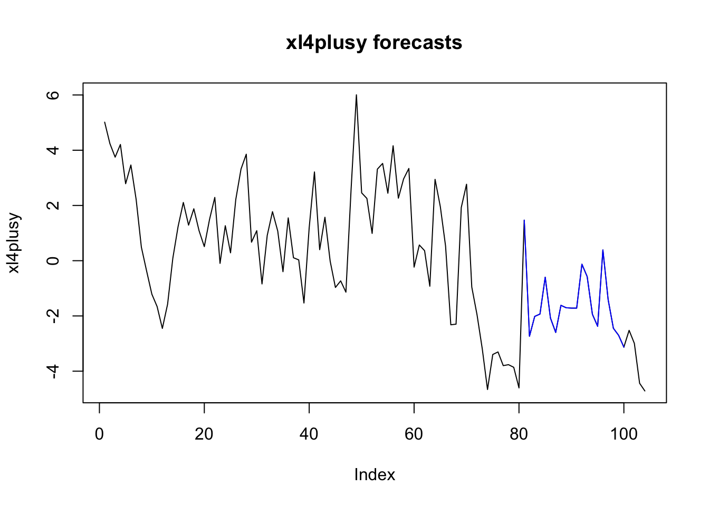

library(tswge)
library(vars)#generate an AR(2) realization
x = gen.arma.wge(n=100, phi = c(.3, -.5))
#check out its ACF
plotts.true.wge(phi=c(.3, -.5))
#xl4 is lagging 4 time points behind x, so x will be a good predictor for xl4
xl4 = c(0, 0, 0, 0, x)
head(xl4)
head(x)
length(xl4)
plot(x, type='l')
lines(xl4, type='l', col='blue')
#x lag -4 perfectly correlates with xl4
ccf(x, xl4)
plot(c(0,0,0,0, x), xl4)
#take first 80 points as training
train = data.frame(x = x[1:80], xl4 = xl4[1:80])
#fit the var model
fit_var <- VAR(train, lag.max=5)
fit_var##
## VAR Estimation Results:
## =======================
##
## Estimated coefficients for equation x:
## ======================================
## Call:
## x = x.l1 + xl4.l1 + x.l2 + xl4.l2 + x.l3 + xl4.l3 + x.l4 + xl4.l4 + const
##
## x.l1 xl4.l1 x.l2 xl4.l2 x.l3 xl4.l3 x.l4
## 0.132051701 0.059110294 -0.409154831 -0.003993879 -0.186835969 -0.089789411 -0.233028641
## xl4.l4 const
## -0.066716782 0.024473248
##
##
## Estimated coefficients for equation xl4:
## ========================================
## Call:
## xl4 = x.l1 + xl4.l1 + x.l2 + xl4.l2 + x.l3 + xl4.l3 + x.l4 + xl4.l4 + const
##
## x.l1 xl4.l1 x.l2 xl4.l2 x.l3 xl4.l3
## 2.913169e-17 -3.111451e-17 4.877166e-17 7.607789e-17 -1.704076e-17 5.154632e-17
## x.l4 xl4.l4 const
## 1.000000e+00 4.835446e-18 2.379673e-17#get the forecasts
fore_var <- predict(fit_var, n.ahead=20)
fore_var_x <- fore_var$fcst$x
fore_var_xl4 <- fore_var$fcst$xl4
#predicting x not particularly good
plot(x, type="l", main="x")
lines(seq(81, 100, 1), fore_var_x[,1], col='blue')
#predicting xl4 is very good, at least for the first 4 points
plot(xl4, type='l', main="xl4")
lines(seq(81, 100, 1), fore_var_xl4[,1], col='red')
#add an exogenous variable
y = gen.arma.wge(104, phi=c(.9))
xl4plusy <- xl4 + y
plot(xl4plusy, type='l', main = "Black = Red + Blue")
lines(x, type='l', col='blue')
lines(y, type='l', col='red')
#fit the model with exogenous variable
train <- data.frame(x = x[1:80], xl4plusy = xl4plusy[1:80])
fit_var_exo <- VAR(train, lag.max=5, exogen = y[1:80])
fit_var_exo##
## VAR Estimation Results:
## =======================
##
## Estimated coefficients for equation x:
## ======================================
## Call:
## x = x.l1 + xl4plusy.l1 + x.l2 + xl4plusy.l2 + x.l3 + xl4plusy.l3 + x.l4 + xl4plusy.l4 + const + exo1
##
## x.l1 xl4plusy.l1 x.l2 xl4plusy.l2 x.l3 xl4plusy.l3 x.l4
## 0.13529105 0.06946204 -0.40925876 0.02804363 -0.23758379 -0.10115902 -0.19411644
## xl4plusy.l4 const exo1
## 0.07192683 0.03723675 -0.11894779
##
##
## Estimated coefficients for equation xl4plusy:
## =============================================
## Call:
## xl4plusy = x.l1 + xl4plusy.l1 + x.l2 + xl4plusy.l2 + x.l3 + xl4plusy.l3 + x.l4 + xl4plusy.l4 + const + exo1
##
## x.l1 xl4plusy.l1 x.l2 xl4plusy.l2 x.l3 xl4plusy.l3
## -1.632599e-16 -1.636980e-16 -4.021597e-16 -8.094442e-17 7.501419e-17 -2.509803e-17
## x.l4 xl4plusy.l4 const exo1
## 1.000000e+00 2.235659e-17 -7.802404e-17 1.000000e+00#forecast
fore_var_exo <- predict(fit_var_exo, n.ahead = 20, dumvar = data.frame(exo1=y[81:100]))
plot(xl4plusy, type='l', main = 'xl4plusy forecasts')
lines(seq(81, 100, 1), fore_var_exo$fcst$xl4plusy[,1], col='blue')
#include x as exogenous variable too so that it can see and use future values of x
exogs <- data.frame(y[1:100], x)
fit_var_exo <- VAR(train, lag.max=5, exogen = exogs[1:80,])
fit_var_exo##
## VAR Estimation Results:
## =======================
##
## Estimated coefficients for equation x:
## ======================================
## Call:
## x = x.l1 + xl4plusy.l1 + x.l2 + xl4plusy.l2 + x.l3 + xl4plusy.l3 + x.l4 + xl4plusy.l4 + const + y.1.100. + x
##
## x.l1 xl4plusy.l1 x.l2 xl4plusy.l2 x.l3 xl4plusy.l3
## 2.806814e-17 1.498738e-17 -8.545449e-17 2.336691e-18 -4.328253e-17 -1.863185e-17
## x.l4 xl4plusy.l4 const y.1.100. x
## -5.069430e-17 1.549672e-17 5.895370e-18 -2.400571e-17 1.000000e+00
##
##
## Estimated coefficients for equation xl4plusy:
## =============================================
## Call:
## xl4plusy = x.l1 + xl4plusy.l1 + x.l2 + xl4plusy.l2 + x.l3 + xl4plusy.l3 + x.l4 + xl4plusy.l4 + const + y.1.100. + x
##
## x.l1 xl4plusy.l1 x.l2 xl4plusy.l2 x.l3 xl4plusy.l3
## -1.632599e-16 -1.636980e-16 -4.021597e-16 -8.094442e-17 7.501419e-17 -2.509803e-17
## x.l4 xl4plusy.l4 const y.1.100. x
## 1.000000e+00 2.235659e-17 -7.802404e-17 1.000000e+00 -8.446543e-18#forecast
fore_var_exo <- predict(fit_var_exo, n.ahead = 20, dumvar = exogs[81:100,])
#plot forecasts
plot(xl4plusy, type='l', main = 'xl4plusy forecasts')
lines(seq(81, 100, 1), fore_var_exo$fcst$xl4plusy[,1], col='blue')